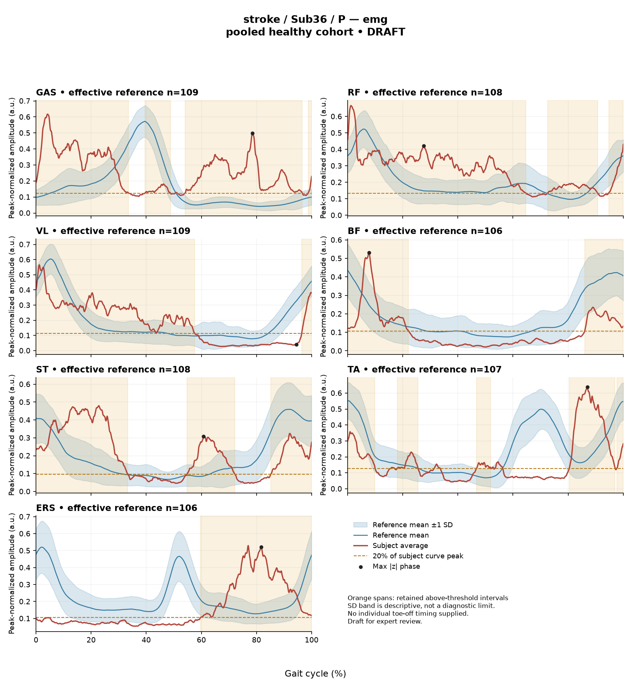

REDB48DCD8AFDBD4E
rater3 / 41 of 150 / Case stroke_Sub36_P / Review row 42
Report: verbatim text
Text file for exact quotations# Gait Report Interpretation — Sub36_P **Interpretation version:** limited-evidence-v3.1-candidate **Participant:** Sub36_P — stroke cohort, paretic side analyzed **Scope:** Research interpretation of supplied quantitative summary only. Not a diagnosis, not a treatment recommendation. --- ## 1. Objective Findings **Participant and side.** Sub36_P is a member of the stroke cohort, and the released data describe the **paretic** side. The analysis cycle runs from initial contact of the paretic limb (0%) to the next initial contact of the same limb (100%); these are two successive occurrences of the same event, not a single instant. No intermediate event — no individual toe-off, no phase boundary — is supplied. All cycle locations below are therefore reported as percentages of the analysis cycle only. **Spatiotemporal values as supplied.** | Measure | Value | |---|---| | Gait speed | 0.23 m/s | | Speed band label | "household ambulator (<0.4 m/s)" | | Cadence | 64.9 steps/min | | Step length symmetry index | −35.9% (successive-footfall definition) | | Composite kinematic deviation score (GPS-like) | 14.68 | The speed-band label denotes a speed bracket only. It does not describe measured walking independence, safety, assistive-device use, or real-world community mobility, and none of those were supplied. The step length symmetry index is negative, which under the stated formula means the **paretic step is the shorter of the two**, by an index value of −35.9%. This value was computed with the successive-footfall definition (each heel at its own initial contact); the instantaneous definition can yield a different number for some subjects, so this value should not be compared with symmetry indices computed the other way. **Critical comparability limit (applies throughout).** This participant's gait speed of 0.23 m/s falls well below the healthy reference cohort's self-selected speed span of 0.80–1.79 m/s. **No speed-matched healthy reference exists in this dataset for this subject.** Every comparison below therefore conflates the effects of very slow walking with any stroke-related control changes, and these two contributions cannot be separated from these data. Deviations from the reference should be read as *differences from an unmatched empirical reference*, not as measures of a disease effect, and not as evidence of a clinical diagnosis, severity grade, or impairment mechanism. The reference used for the kinematic deviation scores is 138 pooled healthy subjects (1001 phase points, source: main_cohort_excel), pooling both body sides and all ages; it is not age- or speed-matched. **Supplied vs. not supplied.** Age, sex, gait events, time post-stroke, stroke clinical scores, and non-paretic-side data are not present in this input. That is a property of this input summary; it must not be read as those fields being absent from the source release. Also outside this input: individual toe-off, matched muscle-specific normal timing references, stride-level variability, raw-signal quality checks, and expert plots. No coronal or transverse plane data are included — all joint values are sagittal only. --- ## 2. EMG Envelope and Threshold Findings **What these numbers are.** The EMG curves are ensemble-averaged envelopes. For each participant, side, and muscle, normalization used a shared maximum across available strides before averaging (participant-, side-, and muscle-specific denominator; not shared between sides), and the released mean curves were used without further amplitude normalization. Consequently: - Amplitudes are **relative envelope values**, not neural drive, force, or strength. Muscles cannot be ranked as stronger or weaker from these values. - An averaged curve does not establish stride-to-stride variability, and the pattern below should not be assumed present in every individual stride. - "Above-threshold interval" means the region where the *averaged envelope* exceeds 20% of that curve's own peak, with a minimum retained interval of 3% of the cycle. These are properties of a thresholded mean envelope — not physiological onset, offset, contraction duration, or inactivity. - An interval written X%–Y% with X > Y wraps the 100%→0% boundary, meaning the mean envelope remained above threshold across the cycle-defining initial-contact boundary. **Detected intervals and coverage (paretic side).** | Muscle | Retained interval(s) (% cycle) | Coverage | Boundary continuity | Peak norm. amp. | Max abs. z vs reference | |---|---|---|---|---|---| | GAS | 40–49; 54–97; 99–34 (wraps) | 88% | Continuous across boundary | 0.62 | 18.9, above reference, at 78% | | RF | 72–91; 95–65 (wraps) | 88% | Continuous across boundary | 0.67 | 3.5, above reference, at 28% | | VL | 96–58 (wraps) | 61% | Continuous across boundary | 0.57 | 3.0, below reference, at 94% | | BF | 86–22 (wraps) | 36% | Continuous across boundary | 0.53 | 2.3, above reference, at 8% | | ST | 55–72; 85–33 (wraps) | 66% | Continuous across boundary | 0.48 | 3.8, above reference, at 61% | | TA | 18–26; 47–52; 80–97; 98–10 (wraps) | 49% | Continuous across boundary | 0.64 | 5.0, above reference, at 87% | | ERS | 60–100 | 40% | Not reported as wrapping | 0.53 | 6.3, above reference, at 82% | **Reading of the timing pattern.** Six of seven recorded muscles (GAS, RF, VL, BF, ST, TA) show mean-envelope continuity across the initial-contact boundary — that is, the averaged envelope did not drop below the 20%-of-own-peak criterion at the cycle-defining event. GAS and RF show the highest coverage at 88% of the cycle; BF the lowest at 36%. TA is the most fragmented, with four retained intervals. ERS has a single retained interval ending at the 100% analysis-window boundary; an endpoint at a window boundary is a property of the analysis window, not necessarily a physiological offset. Coverage below 100% means some portion of the averaged envelope did not meet the retained-interval criteria. It does **not** by itself establish that a genuinely below-threshold segment occurred in any particular stride, and the supplied evidence does not establish where the muscles were electrically silent. Conversely, high coverage does not establish continuous contraction. No interval here can be assigned to a gait phase (stance, swing, loading response, pre-swing, mid-stance) or to a functional role (clearance, push-off, weight acceptance), because no intermediate event is supplied and percentages alone do not identify phases. Anatomical actions may be named — GAS as an ankle plantarflexor, TA as a dorsiflexor, RF/VL as knee extensors, BF/ST as knee flexors and hip extensors, ERS as an erector spinae trunk extensor — but this naming carries no phase assignment. Likewise, none of this timing can be called normal, early, delayed, or prolonged: matched muscle-specific normal timing references were not supplied. **Max |z| interpretation.** Max |z| is an extreme-value statistic: the largest standardized difference across all 1001 phase points relative to the phase-specific reference mean and SD. It is **not** a single-observation z-score, and the conventional 2-SD rule does not apply. In this dataset every one of 109 healthy controls exceeds |z| = 2 on at least one muscle, and per-muscle healthy 95th percentiles for this statistic run from 3.65 (ERS) to 4.61 (TA), higher still under leave-one-out. Against that backdrop: - **GAS 18.9** is far above any of the quoted per-muscle healthy 95th percentiles — the largest standardized difference in this participant by a wide margin. - **ERS 6.3** exceeds the quoted ERS 95th percentile of 3.65; **TA 5.0** exceeds the quoted TA 95th percentile of 4.61. - **ST 3.8, RF 3.5, VL 3.0, BF 2.3** are within or below the 3.65–4.61 band of quoted per-muscle percentiles, though the exact per-muscle percentile for ST, RF, VL and BF was not supplied and should not be inferred. The percentage given with each max |z| is **the location of the largest standardized difference**, not necessarily the location of peak envelope amplitude and not a gait event. "Above reference" means above the phase-specific reference *mean* at that location — it does not mean above a healthy percentile limit. VL is the single channel where the largest standardized difference lies *below* the phase-specific reference mean (at 94%). Because these percentiles come from a pooled cohort that is neither speed- nor age-matched to a 0.23 m/s walker, exceedance does not establish pathology, and non-exceedance does not establish normal physiology. **Co-contraction indices.** CCI here is the Falconer–Winter index computed on the full continuous normalized envelopes (2 × common area / summed areas) across the whole cycle. It is a whole-cycle overlap index of envelope shapes. It is **not** simultaneous activation time, not muscular force, not phase-specific, and it can be non-zero even where detected bursts do not overlap, because sub-threshold activity contributes to the areas. - **TA vs GAS: 0.58** — within the supplied healthy interval of 0.24–0.59, above the supplied median of 0.39, and lying very close to the upper endpoint of that interval. - **RF vs BF: 0.51** — within the supplied healthy interval of 0.48–0.83, below the supplied median of 0.68, and relatively near the lower endpoint. Falling inside these intervals does not establish physiologically normal co-activation or normal muscle function; falling outside would not establish pathological co-activation, stiffness, impaired motor control, or a diagnosis. These values depend on the normalization and envelope pipeline used here, and thresholds or values from other studies or algorithms must not be transferred to them. The same unmatched-reference limit applies: these intervals come from a cohort with no walker at 0.23 m/s. **Not supplied for EMG.** Raw-signal quality checks, crosstalk assessment, electrode placement verification, stride counts, and stride-level variability are outside this input. The array audit noted in the metric definitions (614 evaluable of 700 combinations; 86 lacking valid nonzero paired samples) is a dataset-level statement and is not attributed to this participant's channels. --- ## 3. Kinematic and Reference Comparisons All values are sagittal plane only; no coronal or transverse channels are included, so no statement about frontal or rotational mechanics is possible. | Channel | Sagittal ROM | Gait Variable Score | |---|---|---| | Ankle | 17.9° | 16.68 | | Knee | 50.8° | 21.86 | | Hip | 44.8° | 8.79 | | Pelvis | 15.4° | 5.35 | | **Composite (GPS-like, RMS of the above)** | — | **14.68** | **Composite score.** The GPS-like composite is the RMS of the per-joint GVS values across the sagittal channels provided; it is not the validated 9-variable GPS and should not be equated with it. At 14.68 it is above the supplied healthy composite median of 5.1 and above the supplied 95th percentile of 10.7. The ordering of contributions is knee (21.86) > ankle (16.68) > hip (8.79) > pelvis (5.35). **What GVS and the composite do and do not say.** GVS and the composite are summary magnitudes of difference from the stated reference, averaged over the cycle. They do **not** localize the deviation to a phase of the cycle, and they do not indicate the direction of the waveform difference — a high GVS does not tell us whether the joint was more flexed or more extended, or when. The composite is a single number and cannot be decomposed back into a movement pattern. **ROM.** The ROM values are descriptive ranges over the cycle. No matched ROM reference limits were supplied in this input, so ROM alone does not establish a clinical restriction or a contracture at any joint; a comparison would require an appropriate matched reference that is not available here. **Reference comparability.** The deviation reference actually used for this subject is 138 pooled healthy subjects from main_cohort_excel, pooling both body sides and all ages. The supplied composite percentiles (median 5.1, 95th percentile 10.7) are **pooled calibration percentiles**, not matched leave-one-out normal limits, and should not be treated as such. Because 0.23 m/s lies far below the reference cohort's 0.80–1.79 m/s span, the elevated composite and per-joint GVS values reflect a combination of very-slow-walking kinematics and any stroke-related changes, in proportions that cannot be determined from these data. Exceeding a pooled percentile in this situation does not establish a disease effect, a severity grade, or a clinical diagnosis. The same caution would apply to a healthy-group participant: group membership alone would not prove normal physiology, just as deviation here does not by itself prove disease. --- ## 4. Questions for Further Clinical Assessment These are open questions raised by the limits of this summary. None presupposes that the mechanism or measurement issue named has already been observed, and none implies a treatment direction. 1. **Event timing.** Can individual gait events for this cycle — particularly paretic toe-off and contralateral events — be retrieved from the release? Without them, no interval or max-|z| location in this report can be assigned to a phase of the cycle or to a functional role. 2. **Speed-comparable reference.** Is any reference source available that includes walkers near 0.23 m/s (for example a slow-walking healthy protocol or a speed-stratified comparison)? This is the only way the present deviation magnitudes could be separated into speed-related and stroke-related components. 3. **Matched EMG timing norms.** Are muscle-specific normal timing windows, matched for the normalization pipeline used here, obtainable? Statements about whether any burst is early, delayed, or prolonged are not possible without them. 4. **Signal quality.** Would a raw-signal review of the GAS channel be informative, given the max |z| of 18.9? This value's magnitude relative to the other channels raises the question of whether an amplitude, electrode, crosstalk, or normalization-denominator factor contributes — a question that cannot be settled from the mean envelope alone and is not asserted to exist here. 5. **Stride-level behaviour.** Are individual stride envelopes or a variability measure available? The ensemble average cannot indicate whether the wrapped, near-continuous above-threshold pattern seen in six channels reflects a consistent pattern or the averaging of differing strides. 6. **Below-threshold segments.** For the channels with high coverage (GAS and RF at 88%), can the sub-threshold portions of the mean envelope be examined directly to characterize what occurs outside the retained intervals? The coverage figures alone do not establish whether or where the envelope fell below criterion in a sustained way. 7. **Non-sagittal and contralateral data.** Are coronal/transverse kinematics and non-paretic-side channels available in the release for this participant? Both are outside this input, and the current asymmetry index (−35.9%, successive-footfall) is the only bilateral information present. 8. **Clinical context.** Are age, sex, time post-stroke, lesion information, and stroke clinical scores retrievable for this participant? They would be needed before any of these measurement differences could be placed in a clinical frame. --- *Limits of this report: all statements derive from the supplied mean-curve metrics and algorithm-detected intervals for Sub36_P (paretic side). No diagnosis, severity grade, statistical significance, or treatment recommendation is offered or implied, and no value here has been compared with a speed- or age-matched reference, because none exists in this dataset for this participant.*
Coverage rows
| Excel row | ID | Required content | Components |
|---|---|---|---|
| 232 | R127 | Describe walking speed 0.23 m/s and that it is below the stated 0.80 m/s reference floor; no reference at this speed is supplied. | AND: displayed speed and that it lies below the 0.80 m/s reference floor, so no speed-supported healthy reference exists in this dataset. Optional: cadence, speed-band label (not a functional claim). One sentence may also serve the comparability half of G03. |
| 233 | R128 | Identify knee AND ankle as the principal sagittal GVS differences. Exact GVS values are optional; identify the findings as reference-relative sagittal summary differences. | AND: knee AND ankle. Stating which joint is larger is optional; asserting the reverse order is an error. Exact GVS values are optional; no waveform direction, phase or restriction is required. Pelvic ROM 15.4 optional as a measurement only. |
| 234 | R129 | Describe GAS envelope above its phase-specific reference mean at approximately 78% of the analysis cycle (displayed max |z| 18.9). Within each route, muscle identity AND mean-relative direction AND approximate cycle location are required. Exact max-|z| repetition is optional. | Required for each route: muscle identity AND direction relative to the phase-specific reference mean AND approximate cycle location. Optional: exact max |z| value, comparison with the supplied endpoint span (descriptive only). Prohibited: percentile classification, gait phase, physiological onset, severity. |
| 235 | R130 | Describe EITHER ERS envelope above its phase-specific reference mean at approximately 82% of the analysis cycle (displayed max |z| 6.3) OR TA envelope above its phase-specific reference mean at approximately 87% of the analysis cycle (displayed max |z| 5.0). One complete muscle-specific route is sufficient. Within each route, muscle identity AND mean-relative direction AND approximate cycle location are required. Exact max-|z| repetition is optional. | OR: one complete route suffices. Required for each route: muscle identity AND direction relative to the phase-specific reference mean AND approximate cycle location. Optional: exact max |z| value, comparison with the supplied endpoint span (descriptive only). Prohibited: percentile classification, gait phase, physiological onset, severity. |
| 236 | R132 | Describe the supplied successive-footfall step-length index -35.9% and its meaning: the paretic step is shorter. | AND: displayed index and the direction supported by its sign. Optional: formula, definition wording. Acceptable phrasing for small displayed values: "a small difference with the paretic step slightly shorter/longer" (not a cutoff). Prohibited: restating the index as a percentage shortening (E01), severity grades, whole-gait symmetry generalization (E07 issue, not an omission). |
| 237 | G03 | Express a meaningful limitation of reference comparability AND why the comparison cannot establish disease effects or clinical diagnosis; for controls it cannot establish disease or overall normality. One statement may also support a case requirement. | AND: comparability and inference limitations |
Exact system input
Saved fileDraft a research gait-report interpretation for a physical therapist or physiatrist using only the supplied quantitative summary. This is a limited-evidence interpretation task, not diagnosis or treatment selection. Rules: - Describe the participant's actual group and side, available findings, and missing channels accurately. Healthy-group membership does not prove normal physiology; deviations from an empirical reference do not by themselves establish disease. - Treat detected EMG intervals and coverage as properties of an averaged envelope under the stated threshold and duration rule. Do not convert them into physiological onset, offset, duration, continuous contraction, or inactivity outside the intervals. You may describe reported coverage, retained intervals and boundary continuity at the mean-envelope level. Do not infer the same pattern in every individual stride. Say no below-threshold segment only when the supplied evidence establishes that; a rounded coverage value or no retained interval alone does not establish it. - Individual toe-off and matched muscle-specific timing references are not supplied in this task. Use percentages of the analysis cycle. When the input explicitly identifies an initial-contact boundary, you may name that boundary or describe numerical proximity to it. Do not assign stance/swing, loading response, pre-swing, mid-stance or another event to a percentage, or substitute a conventional 60% split. Anatomical muscle actions may be named, but do not map an interval to a gait-phase function such as clearance, push-off or weight acceptance. Do not characterize timing as normal, early, delayed or prolonged without the required evidence. - Respect the supplied normalization method. Relative envelope amplitude is not strength or force, and average curves do not establish stride-to-stride variability. - Report CCI as a whole-cycle overlap index of normalized EMG envelopes. You may compare it with the supplied empirical interval or a supplied median, including proximity to an endpoint. Do not invent an unavailable median. Being within that interval does not establish physiologically normal co-activation or normal muscle function; being outside it does not establish pathological co-activation, stiffness, impaired control or a diagnosis. CCI is not simultaneous activation time, muscular force or a phase-specific result. It depends on normalization and envelope methods; do not transfer values or thresholds from other studies or algorithms. - Describe GVS and GPS-like as summary differences from the stated reference. Neither localizes waveform direction or phase; ROM alone does not establish a clinical restriction without an appropriate comparison. Do not treat pooled calibration percentiles as matched leave-one-out normal limits. - Where using a reference comparison, convey both limited comparability and the inability to establish a disease effect or clinical diagnosis from that comparison. One clear explanation per report is enough; age and speed need not be recited as separate checklist words. A speed inside an overall range does not prove that an appropriate matched reference exists. Apply these limits to controls as well. - The location of maximum |z| is the largest standardized difference from the reference, not necessarily the time of peak envelope amplitude or a gait event. Above/below reference in an EMG row means relative to the phase-specific reference mean at that location, not relative to a healthy percentile limit. - Preserve numerical direction and the displayed precision. Do not invent values, clinical severity grades, statistical significance, or unavailable reference values. Descriptive comparisons with supplied values remain allowed. Near-boundary rounded values do not justify classifying hidden unrounded values. - Clinical follow-up questions may ask whether a mechanism or measurement issue exists; do not presuppose it has already been observed. Do not recommend treatment. If EMG is unavailable, section 2 may simply state that envelope timing, amplitude and CCI cannot be assessed. Reference-only plots do not provide patient EMG. Use exactly these four sections: 1. Objective Findings 2. EMG Envelope and Threshold Findings 3. Kinematic and Reference Comparisons 4. Questions for Further Clinical Assessment
Exact case input
Saved fileCandidate interpretation version: limited-evidence-v3.1-candidate
Draft the four-section report using only this subject's supplied evidence.
Metric definitions (read before interpreting any number below):
- All joint angles and ROM values are SAGITTAL PLANE only. Coronal/transverse data are not included.
- The released EMG curves are ensemble-averaged envelopes. For each participant and recorded muscle, normalization uses a shared maximum across the available strides before averaging; individual strides are not independently rescaled to their own peaks. This pipeline uses the released mean curves without further amplitude normalization. In the checked stroke release, the denominator is participant-, side-, and muscle-specific; it is not shared between sides. The local array audit verified 614 evaluable combinations, not all 700; 86 lacked valid nonzero paired samples. Amplitudes are relative envelope values, not absolute neural activation, force, or strength. Do not rank muscles as stronger or weaker from these amplitudes, or infer stride-to-stride variability from an average curve.
- Above-threshold intervals are the regions where the averaged envelope exceeds 20% of that curve's own peak, minimum retained interval 3% of the cycle (by sample count). An interval written as (X%-Y%) with X > Y wraps across the 100%->0% cycle boundary (envelope remains above threshold across the cycle-defining event). An onset of 0% is the analysis-window boundary, not necessarily a physiological onset. "No interval detected" means no region met the threshold + duration criteria; it does NOT mean the muscle is inactive or non-functional.
- CCI is the Falconer-Winter co-contraction index computed on the full continuous envelopes (2*common area / summed areas), so it can be non-zero even when the DETECTED burst intervals of the pair do not overlap (sub-threshold activity contributes).
- The composite kinematic deviation score is the RMS of the per-joint Gait Variable Scores over the sagittal channels provided ("GPS-like", not the validated 9-variable GPS).
- Step length symmetry index: 200*(paretic - non-paretic)/(paretic + non-paretic), in %. NEGATIVE means the paretic-side step is SHORTER. Two operational step-length definitions exist (successive-footfall: each heel's position at its own initial contact; instantaneous: both heels at the same instant) and give different values for some subjects -- the definition actually used is stated next to the symmetry value.
- "Max |z| deviation" is the LARGEST absolute z-score across all 1001 phase points of the cycle, comparing this curve to the healthy-cohort mean/SD at each phase. This is an extreme-value statistic, NOT a single-observation z-score: in this dataset every one of 109 healthy controls exceeds |z| = 2 on at least one muscle, and per-muscle healthy 95th percentiles for this statistic run 3.65 (ERS) to 4.61 (TA) -- higher still under leave-one-out. Do not label a value abnormal by the conventional 2-SD rule; use the healthy reference range given per muscle where provided.
- Healthy-cohort CCI reference (this dataset): RF-vs-BF median 0.68 (2.5th-97.5th pct 0.48-0.83); TA-vs-GAS median 0.39 (0.24-0.59). Composite score reference: median 5.1, 95th percentile 10.7.
- COHORT BACKGROUND (calibration context, not necessarily the exact reference used for this subject -- the actual reference composition is stated in a dedicated line with the subject data below): the full healthy cohort is 138 subjects for kinematics, effective n = 106-109 per muscle for EMG (29 controls have no usable EMG; completeness varies by age), pooling both body sides and all ages; it is not age- or speed-matched to this subject. A leave-one-out run uses one subject fewer than these counts.
- SPEED SUPPORT LIMIT (applies to most stroke subjects in this dataset): the healthy reference cohort's self-selected walking speeds span 0.80-1.79 m/s. If this subject's gait speed is below 0.80 m/s, NO speed-matched healthy reference exists in this dataset -- 41 of the 50 stroke subjects are below that floor. Deviations from the reference then conflate slow-walking effects with stroke-specific control changes, and the two cannot be separated from these data. Describe deviations from the reference as such; do not attribute them wholly to stroke pathology.
- Additional source fields are outside this input. Age, sex and gait events may be available in the release; time post-stroke, stroke clinical scores and a non-paretic-side designation apply only to the stroke cohort, as applicable. Do not claim every listed field exists for every participant. Distinguish not supplied, not applicable and documented absent recordings.
The released paretic-side cycle runs from initial contact of that limb at 0% to its next initial contact at 100%. The cycle boundary may be called initial contact; the endpoints are successive occurrences, not one instant. No intermediate event or phase boundary is supplied.
Model-visible information boundary: the summary contains mean-curve metrics and algorithm-detected intervals, not individual toe-off, matched normal muscle timing, stride-level variability, raw-signal quality checks, or expert plots. Information not supplied here must not be described as absent from the source dataset. Gait-cycle percentages alone do not identify gait phases.
Subject: Sub36_P (group: stroke, affected side: paretic)
Gait speed: 0.23 m/s (household ambulator (<0.4 m/s)) [The ambulation label denotes a speed band only, not measured walking independence, safety or real-world community mobility.]
Cadence: 64.9 steps/min
Step length symmetry index: -35.9% (step-length definition: successive_footfall)
Composite kinematic deviation score (GPS-like): 14.68
Deviation reference actually used for this subject: 138 healthy subjects (pooled), 1001 phase points, source: main_cohort_excel.
EMG envelope findings:
- GAS: above-threshold interval(s) 40%-49%; 54%-97%; 99%-34% (wraps cycle boundary), 88% of cycle above threshold, above threshold across cycle boundary, peak normalized amplitude 0.62, max |z| vs healthy reference: 18.9 (above reference, at 78% of cycle)
- RF: above-threshold interval(s) 72%-91%; 95%-65% (wraps cycle boundary), 88% of cycle above threshold, above threshold across cycle boundary, peak normalized amplitude 0.67, max |z| vs healthy reference: 3.5 (above reference, at 28% of cycle)
- VL: above-threshold interval(s) 96%-58% (wraps cycle boundary), 61% of cycle above threshold, above threshold across cycle boundary, peak normalized amplitude 0.57, max |z| vs healthy reference: 3.0 (below reference, at 94% of cycle)
- BF: above-threshold interval(s) 86%-22% (wraps cycle boundary), 36% of cycle above threshold, above threshold across cycle boundary, peak normalized amplitude 0.53, max |z| vs healthy reference: 2.3 (above reference, at 8% of cycle)
- ST: above-threshold interval(s) 55%-72%; 85%-33% (wraps cycle boundary), 66% of cycle above threshold, above threshold across cycle boundary, peak normalized amplitude 0.48, max |z| vs healthy reference: 3.8 (above reference, at 61% of cycle)
- TA: above-threshold interval(s) 18%-26%; 47%-52%; 80%-97%; 98%-10% (wraps cycle boundary), 49% of cycle above threshold, above threshold across cycle boundary, peak normalized amplitude 0.64, max |z| vs healthy reference: 5.0 (above reference, at 87% of cycle)
- ERS: above-threshold interval(s) 60%-100%, 40% of cycle above threshold, peak normalized amplitude 0.53, max |z| vs healthy reference: 6.3 (above reference, at 82% of cycle)
Co-contraction indices:
- TA_vs_GAS: CCI = 0.58
- RF_vs_BF: CCI = 0.51
Joint kinematic findings (sagittal plane):
- AnkleAngles: range of motion 17.9 deg, Gait Variable Score 16.68
- KneeAngles: range of motion 50.8 deg, Gait Variable Score 21.86
- HipAngles: range of motion 44.8 deg, Gait Variable Score 8.79
- PelvisAngles: range of motion 15.4 deg, Gait Variable Score 5.35Reference card
Saved file# Reference context: stroke/Sub36_P Mean/SD reference: 138 controls; method pooled; exclusions: []. Effective reference counts: GAS=109, RF=108, VL=109, BF=106, ST=108, TA=107, ERS=106, AnkleAngles=138, KneeAngles=138, HipAngles=138, PelvisAngles=138. The exact system and user input files define what the model receives. The EMG and kinematic plots are supplementary expert evidence, not model inputs. The plotted mean plus/minus one SD is descriptive, not a clinical normal band. Negative lower EMG bands can result from mean minus SD; they do not imply negative recorded EMG. The max-|z| p95 span in the input is pooled calibration context. Complete muscle-specific LOO thresholds are not supplied; an appropriately indeterminate classification is allowed. Controls are excluded from their own mean/SD reference, but cohort-level calibration has prior reference-data reuse. It is not an independent matched clinical limit. GPS-like is a four-channel sagittal composite, not the validated nine-variable GPS. The pooled median/p95 background is not a matched LOO normality boundary. CCI uses continuous normalized envelopes over the whole analysis cycle. An empirical interval comparison does not establish normal muscle function. Threshold intervals and rounded coverage describe the averaged envelope. Rounded 100% coverage and one interval do not prove absence of short below-threshold gaps. Use the group-specific cycle and normalization provenance in the actual input. No individual intermediate gait events or matched normal muscle timing are supplied. Administrative age and published bilateral speed are not added to this input. Expert-visible plots do not justify requiring unseen direction, phase or morphology. For a new-case requirement, cite exact input evidence. Select clinically useful descriptive content without inferring a diagnosis or severity from rank alone.
Expert reference curves
Only text inputs were supplied to the model. Do not require curve-only findings.
EMG

Kinematics